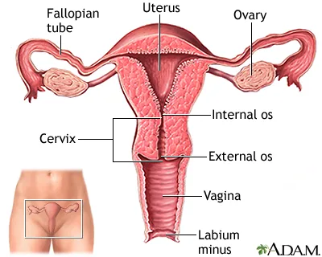

Expanded Nursing Uganda Explanation
Uterus, Uterine tubes and Ovaries should be reviewed through safe maternal and newborn assessment, early recognition of danger signs, respectful communication and timely referral. Connect the definition to vital signs, bleeding, fetal or newborn wellbeing, patient education and local protocol requirements.
Contents, 14 sections (tap to expand)
01 THE NON-PREGNANT UTERUS
The uterus is a hollow muscular organ of the female reproductive system where offspring gestate . A pear-shaped organ, the uterus lies posterior-superior to the bladder and anterior to the rectum in the female pelvis. It consists of the fundus (top), body (middle), and cervix (lower). The uterus is composed of the endometrium (inner mucosal lining), myometrium (smooth muscular middle layer), and perimetrium.
Situation : The uterus lies in the true pelvis in an anteverted (leans forward) and ante-flexed (bends over its body) position. The body of the uterus lies above the urinary bladder.
Shape – it resembles that of an avocado or it is pear shaped.
Size – 7.5cm long, 5cm wide and 2.5cm thick.
Weight – 60 grams.
Gross-structure :
The uterus consists of two main parts; the body or corpus and the neck or cervix .
1. THE BODY OR CORPUS Forms the upper 2/3 of the uterus and it is the whole part above the cervix.
- The Fundus : This is the portion of the body which lies between and above the cornua. NOTE : This is the part a midwife palpates during abdominal examination to measure the height of the uterus/fundus during pregnancy and fundal height during puerperium.
- The cornua : These are the lateral angles of the uterine body where the fallopian tubes are attached. In normal labour, the uterine contractions start at the cornua and spread downwards the uterus.
- The cavity : This is the potential space between the posterior and anterior walls. It is triangular in shape and it is occupied by the products of conception during pregnancy, mainly the fetus and the placenta.
- The isthmus : Is the narrowest part of the body of the uterus immediately above the internal os. During pregnancy, this develops into the lower uterine segment.
2. THE NECK OF THE UTERUS This forms the lower 1/3 of the uterus and enters the vagina at right angles.
02 Microscopic structure of the uterus There are three layers of tissue from within.
1. The endometrium : It is the mucus membrane which lines the cavity of the uterus. It is made up of three layers; The compact layer, the Functional (spongy) layer and the Basal layer. The appearance of this lining varies with each day of the menstruation cycle. During menstruation, it is shed up to the basal layer.
2. The myometrium : It is the thickest muscle layer and has three layers.
- Outer layer or longitudinal fibres: These pass over the fundus from front to back, starting and finishing at the level of the internal os with a few fibres into the cervix. In labour as the muscles contract and relax, they help to shorten the upper uterine segment and help to pull up and shorten the cervix.
- The middle layer: Oblique fibres These are the interlacing fibres. They are known as living ligatures. They close the bleeding blood vessels after the separation of the placenta and so control bleeding.
- The circular muscle fibres: Found in the cervix and cornua. Help in dilatation of the cervix. They relax during labour as they are more in the cervix.
3. The perimetrium – This is the outer covering of the peritoneum which covers the uterus except at the side where it forms the broad ligaments and at the level of the isthmus.
03 Relations to the uterus
- Superiorly : The intestines and the abdominal muscles.
- Anteriorly : The bladder, Uterovesical pouch, anterior vaginal fornix.
- Posteriorly : The rectal uterine pouch, rectum, utero-sacral ligaments.
- Laterally : The broad ligaments, ureters, Fallopian tubes, ovaries and round ligaments.
- Inferiorly : The vagina.
- Blood supply: Uterine arteries: These arise from the internal iliac arteries and ovarian arteries.
- Venous return: Uterine veins.
- Lymphatic drainage: Into the internal iliac and sacral glands.
- Nerve supply: By the sympathetic and the parasympathetic nerves which are branches of the lee Franken Hauser plexus.
04 Supports
- The round ligaments : Maintain the uterus in its position of anteverted and anteflexed. They extend from the cornua at each side, pass downwards and insert into the tissue of the labia majora.
- The broad ligaments : These are not true ligaments but folds of peritoneum extending laterally between the uterus and the side walls of the pelvis.
- Cardinal ligament or Transverse cervical ligaments : They run out from the side walls of the cervix to the side walls of the pelvis.
- The uterosacral ligament : These pass from the cervix to the sacrum.
- Pub cervical ligament : These pass from the cervix under the bladder to the pubic bone.
- The ovarian ligament: These begin at the cornua and attach to the ovaries.
05 Functions of the Uterus:
- Responsible for menstruation as the endometrium sheds during each monthly period.
- The endometrial cavity accommodates the fetus during pregnancy.
- Uterine muscles facilitate contractions during labor, enabling the expulsion of the infant through the birth canal.
- To accommodate and nourish the fertilized ovum for the gestation period.
- To involute following childbirth.
- It is a site for intra-Uterine Device insertion.
06 Clinical note
The uterus undergoes physiological changes in structure when one is pregnant due to the action of progesterone and oestrogen hormone.
07 Guiding questions
- Describe the non-pregnant uterus with a well-labeled diagram.
- List three layers of the uterus.
- Describe the myometrium of the uterus.
- Outline three uterine supports.
- Outline four functions of the uterus.
08 Clinical procedure: Antenatal Examination
An antenatal mother is waiting to be examined. Using the Leopold method, palpate her abdomen.
TASK: Abdominal examination
- Step Action: Rationale:
- 1. Welcome and explain the procedure to the mother, wash hands. To allay anxiety and promote cooperation.
- 2. Request mother to empty bladder. For comfort.
- 3. Put the mother in a recumbent position and expose the xiphisternum and symphysis pubis. To aid relaxation of the abdominal muscles.
- 4. While standing at the foot of the bed, inspect and observe the abdomen for: – Striae gravidarum, linear nigra, Fetal movements, Size and shape – Linea alba, – Skin rashes, skin hyper-pigmented spots and scars To rule out pregnancy.
- 5. Stand on the right hand side of the mother, – Ask the woman if she has any pain palpation in the abdomen. – Do light palpation of her left and right abdomen, and ensure to exclude enlargement of the spleen and liver. To detect anatomical conditions of the organs.
- 6. Fundal grip . Palpate the upper abdomen with both hands to feel the gravid uterus. To detect the size and position of the uterus.
- 7. Umbilical grip . Place the hand to apply deep pressure with the palm on the lateral sides to feel the uterus. Take note of the irregular nodules which indicate fetal limbs. To identify the location and position of the fetal back.
- 8. Pawlik’s grip – Turn and face the mother’s legs. – Use the fingers and thumbs to feel the moving fetal limbs in the lower abdomen. To determine the presentation and the amniotic fluid volume.
- 9. Pelvic grip . Move the finger towards the pelvis to determine where the brow is located. To confirm presentation and the lie.
- 10. Auscultation Place Pinard’s stethoscope over the maternal abdomen where the fetal back was felt. Move the stethoscope until maximum intensity is felt. Place the right hand on the maternal radial pulse and compare it with the fetal heart rate. Count the fetal heart beats per minute. To determine fetal viability.
- 11. Tell the mother findings
09 Fallopian Tubes
Fallopian tubes are two muscular tubes leading from the ovaries to the uterus .
They consist of the infundibulum (with fimbriae near the ovary), ampullary region , isthmus (narrowest part linking to the uterus), and interstitial part traversing the uterine musculature. They are also called oviduct or fallopian tubes named after Fallopius, an ancient Greek anatomist.
Situation
- They are situated in the true pelvis on either side of the uterus.
- Each tube extends from the cornua of the uterus and travels towards the side walls of the pelvis, then turns downwards and backwards before reaching it.
- The tubes lie in the broad ligaments.
Shape
- They are tubes. The lumen of each communicates with the cavity of the uterus superiorly and the peritoneal cavity inferiorly.
Size
- The length of each tube is approximately 10 cm.
- The lumen is about 3mm.
- The thickness is that of an ordinary pencil.
Gross Structure/Surface Anatomy
Each tube is divided into four parts namely;
1. The interstitial portion / intramural . a. This lies within the walls of the uterus. b. It is 1.25cm thick. c. Its lumen is about 1mm in diameter.
2. The isthmus . Is the narrow part immediately adjoining the uterus. It is 2.5cm long.
3. The ampulla . Is a widened area of the tube where fertilization is thought to occur. It is 5cm long.
4. The infundibulum . a. It is the funnel-shaped extremity. b. It is the terminal portion of the tubes, which turns backwards and downwards. c. It extends in finger-like processes which surround the orifice of the tube. d. It measures 1.25cm long.
Microscopic Structure
The fallopian tube has 4 coats (from within outwards):
- A lining of ciliated columnar epithelium . a. This forms the lining of the tube and aids the passage of the ovum to the uterus. b. This epithelium is arranged in folds known as placae which slows down the journey of the fertilized ovum and so making it ready for embedding when it reaches the uterus.
- A layer of connective tissue : Lies beneath the epithelium.
- Muscle coat / Muscularis . This is a thin muscular coat arranged in two layers: a. Inner layer of circular fibres , which are numerous, near the infundibulum. b. Outer layer of longitudinal fibres .
- Peritoneum : A covering of the peritoneum of the broad ligament. hangs over the tubes but absent on their inferior surface.
Blood Supply
- The blood comes from the uterine and ovarian arteries.
- The venous return is by corresponding veins.
Lymphatic Drainage: The lymphatic drainage is into the lumbar glands.
Nerve Supply: From the ovarian plexus.
Supports: The Infundibulo-pelvic ligaments. These are formed from folds of the broad ligament and run from the infundibulum of the tube to the side walls of the pelvis.
FUNCTIONS
- The tube forms a canal through which the ovum and sperm pass.
- Provide a site for fertilization (ampulla) and guide the zygote to the uterus for implantation.
- Commencements of early development of the fertilized ovum take place in the tube.
- Female sterilization is hence a Family Planning site.
- Facilitate sperm movement using tubal cilia and transport the ovum from the ovaries to the uterus.
- Supply nutrients to the fertilized ovum during its journey to the uterus.
Relations
- Anteriorly : Intestines and the peritoneal cavity.
- Posteriorly : The peritoneal cavity and the intestines.
- Superiorly : Peritoneal cavity.
- Inferiorly : The broad ligaments and the ….
- Laterally : Infundibulo-pelvic ligaments and the side walls of the pelvis.
- Medial : The uterus.
Clinical note
Conditions like ectopic pregnancy and Salpingitis are associated with the fallopian tubes.
Important
- Cleanliness of the vulva is very significant.
- Early detection of abnormal vaginal discharge like the pus discharge of Gonorrhea is important so that treatment is given on time.
- List four parts of the uterine tubes.
- Outline two functions of the ampulla.
- Describe the uterine tubes with the aid of a diagram.
- Explain three functions of the uterine tubes.
10 Ovaries :
The ovaries are two small glandular structures. They are the female sex endocrine glands in which ova are produced.
Two glands on each side of the uterus, ovaries are attached to the uterus by the ovarian ligament and the pelvic wall by the suspensory ligament . Covered by the mesovarium (part of the broad ligament), the ovary’s size varies with age and menstrual cycle stage.
Situation
a. They lie within the peritoneal cavity in a small depression of the posterior wall of the broad ligaments.
b. They are situated at the fimbriated end of the uterine tubes, about the level of the pelvic brim.
c. Each is attached to the upper part of the uterus by the ligament of the ovary and the tissue called Mesovarium, a band of the broad ligament.
Shape : They are small, with a corrugated surface, like an organ, dull white in colour.
Size : The size of ovaries varies in age and in different individuals. They are about 2.5cm-3.5 cm long, 2cm wide and 1cm thick.
Development : The ovaries develop in the germinal ridges of the posterior wall and during fetal life, they descend into the pelvic cavity in the same manner as the testes.
Gross Structure/Surface Anatomy
The structure of the ovaries varies with the age of the woman.
- From birth to puberty: The organs are smooth, dull white and solid in consistency.
- Menstrual phase : Between puberty and menopause, the organs are larger and irregular on the surface, more like a walnut than an almond.
- Post-menopausal phase: The ovaries become smaller and shrunken and are covered with scar tissue where month after month, the Graffian follicles have ruptured.
Microscopic Structure
The ovaries have two layers of tissue or zones:
The Medulla .
- This is the central portion, consisting chiefly of fibrous tissue, blood vessels, lymphatics and nerves.
- Has the hilum which is the central point of entry for blood vessels, lymphatics and nerves.
- Contains no follicular structures but in pregnancy, the corpus luteum may spread towards the medulla.
The cortex .
- This is the functional part of the ovary , because it’s where Graffian follicles grow.
- It surrounds the medulla.
- It consists mostly of stroma in which the Graffian follicles are embedded.
- Before puberty, the ovaries are inactive, but the stroma already contains immature or primitive follicles known as primordial follicles.
- In the cortex of each ovary of every female child, 100,000 to 200,000 primordial follicles can be found, although not all of them reach maturity.
- As the child grows, the primitive structures become mature and are known as Graafian follicles.
- With the onset of puberty, one Graffian follicle grows more rapidly each month than the others.
- And after its full development, it bursts, releasing a mature ovum. This process is called ovulation.
- The empty Graffian follicle starts to undergo certain changes and develops into a corpus luteum (a yellow body).
- If fertilisation does not take place, the corpus luteum lasts for two weeks, then fibrosis occurs, and so it turns into corpus albicans (white body) then into the final stage of corpus fibrosum.
- If the ovum becomes fertilized, the corpus luteum does not die but increases in size. It produces progesterone and a little amount of oestrogen under the influence of the Luteinizing hormone from the anterior pituitary gland. This maintains pregnancy until the placenta has developed sufficiently to fulfil its own function at 12 weeks of gestation.
Tunica albuginea – This is a dense fibrous coat which surrounds the cortex.
Germinal epithelium encloses the ovary.
- Blood Supply : Ovarian arteries.
- Venous drainage : Is into the ovarian veins.
- Lymphatic drainage : Into the lumbar glands.
- Nerve supply : Ovarian plexus.
Supports
- The fossa where it lies.
- The ovarian ligament.
- The broad ligament that extends between the uterine tube and the ovary.
- Ovarian fimbria and infundibulo-pelvic ligament.
Ovarian Functions:
- Produce ova and female sex hormones, predominantly estrogen and progesterone.
- Oestrogen promotes the development of secondary sex characteristics, growth, and maturity of reproductive organs.
- Progesterone prepares the endometrium for pregnancy, aids in placental development, breast enlargement during pregnancy, and inhibits ovum production during gestation.
- Together, estrogen and progesterone regulate menstrual cycle changes in the endometrium.
Clinical note:
The ovaries may become infected with microorganisms (Oophritis), a fertilized ovum may embed in the ovary (Ovarian pregnancy) and tumors and cysts can affect them as well.
- Describe the development of the Graffian follicle.
- Describe the cortex of the ovary.
- State two functions of the medulla.
- State two hormones produced by the ovary.
- With the aid of a diagram, describe the mature ovary.
- Define ovulation.
- Give three reasons why ovulation takes place.
- List four ovarian supports.
- State two functions of the ovary.
11 Nursing Uganda Clinical Lens
Use Uterus, Uterine tubes and Ovaries as a practical nursing topic, not only a memorized definition. Read the topic through the safety of two patients: the mother and the fetus or newborn.
- What to understand first: define uterus, uterine tubes and ovaries, identify the normal or expected pattern, then explain what changes when the patient is unwell.
- Why it matters in care: the nurse must recognize risk early, explain findings clearly, document accurately and know when to escalate.
- How to revise it: connect each point to assessment, nursing diagnosis or care problem, intervention, rationale and evaluation.
12 Assessment Guide
- Maternal vital signs, bleeding, pain, contractions, uterine tone and danger signs.
- Fetal or newborn wellbeing, feeding, temperature, breathing and activity.
- History of pregnancy, parity, medications, allergies, investigations and referral risks.
13 Nursing Priorities, Rationales and Outcomes
- Recognize danger signs early and escalate without delay.
- Provide respectful communication, privacy, infection prevention and clear documentation.
- Teach the mother what to monitor at home and when to return urgently.
The rationale for these priorities is patient safety: nursing actions should prevent deterioration, reduce discomfort, support recovery and create clear evidence for the next caregiver.
- Expected outcome: Mother and baby remain stable, danger signs are acted on early, and the family understands follow-up instructions.
14 Patient Teaching and Revision Check
- Explain uterus, uterine tubes and ovaries in simple language the patient or caregiver can repeat back.
- Teach warning signs, medicine or follow-up instructions, hygiene or lifestyle points where relevant.
- For exams, prepare a short answer using: definition, causes or risk factors, signs, assessment, management, complications and prevention.
- For ward practice, document baseline findings, actions taken, patient response and the plan for review.
Illustrations and Diagrams (1)

Related Video Lectures
Watch nursing lecture videos on YouTube for this topic. Opens in a new tab.
Watch on YouTubeExternal link: YouTube may use its own cookies and terms. Nursing Uganda is not affiliated with YouTube.